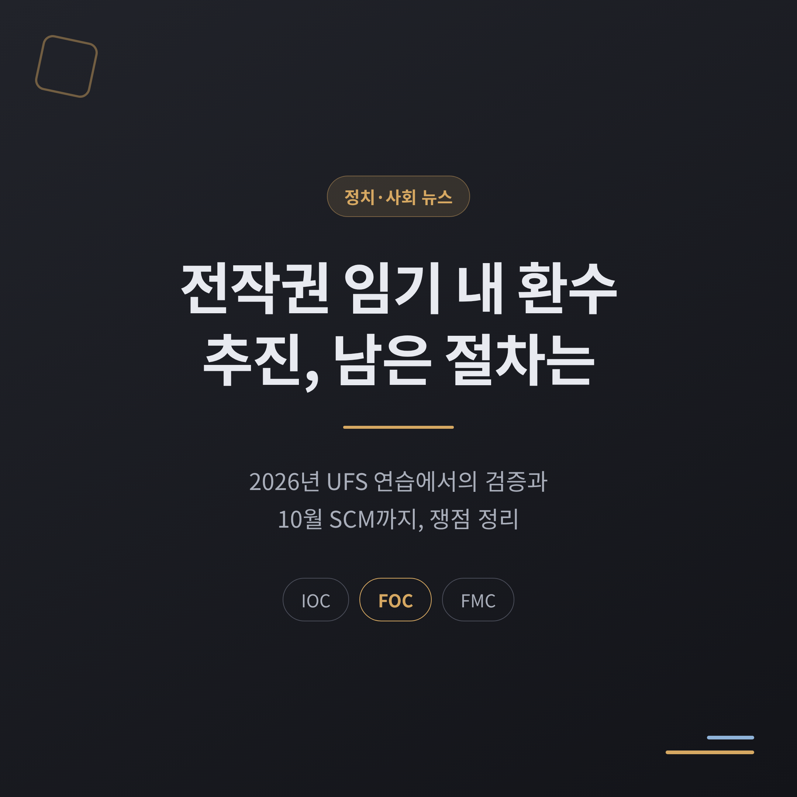
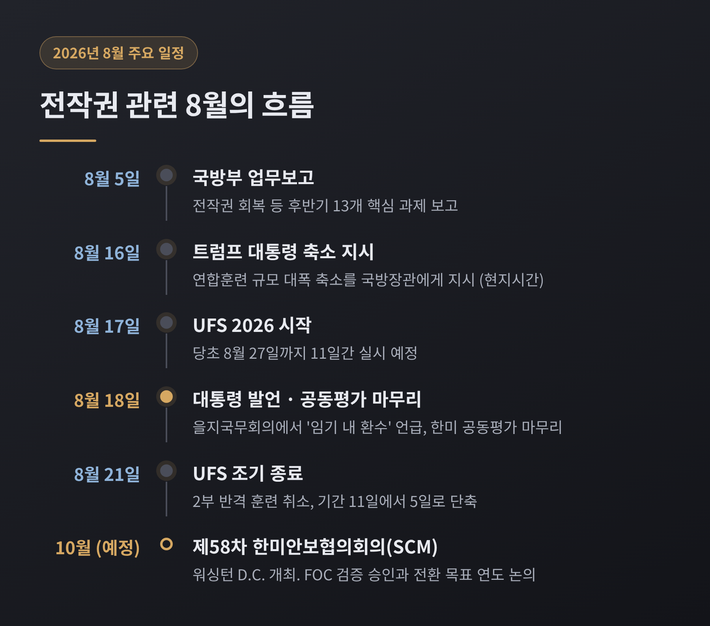
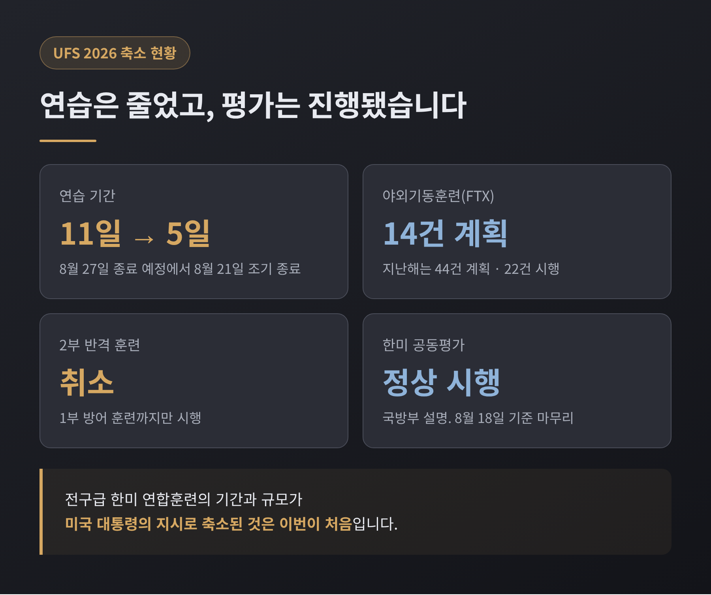
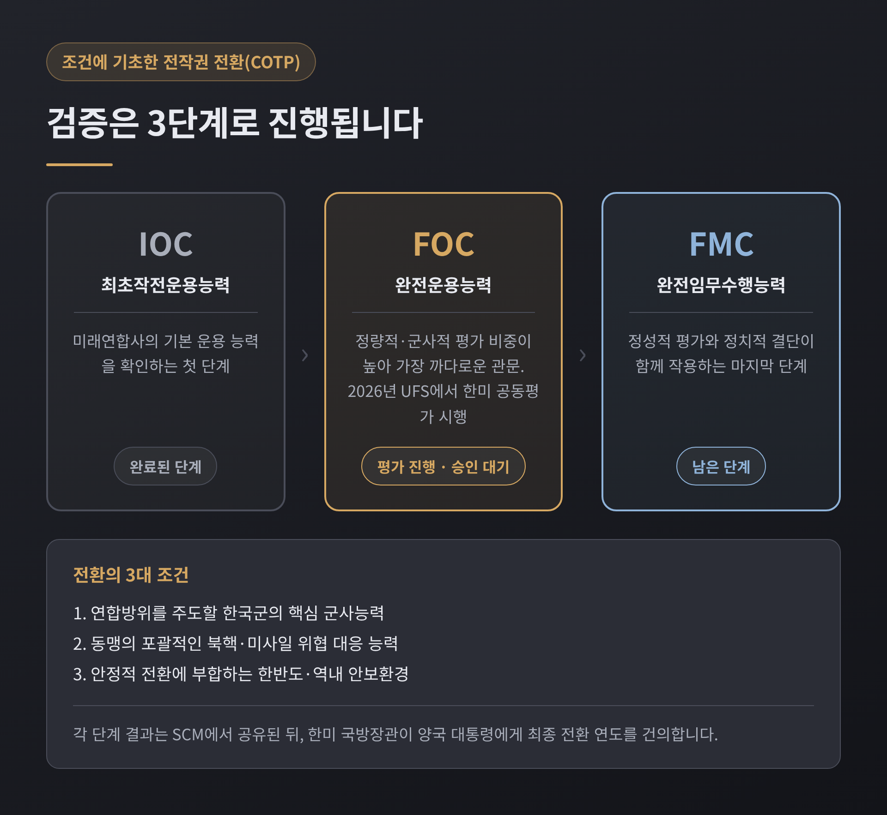
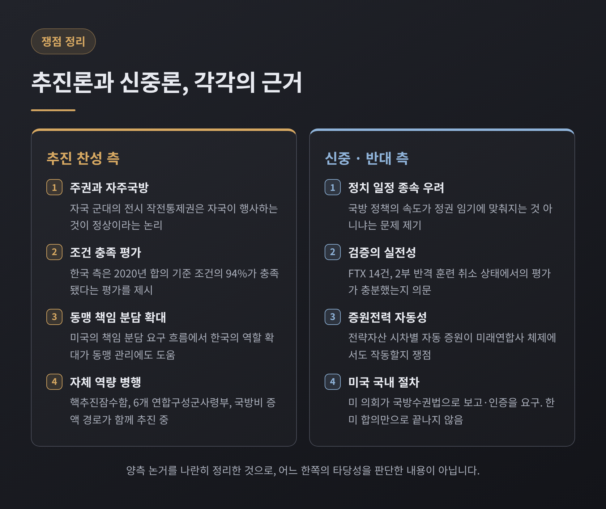
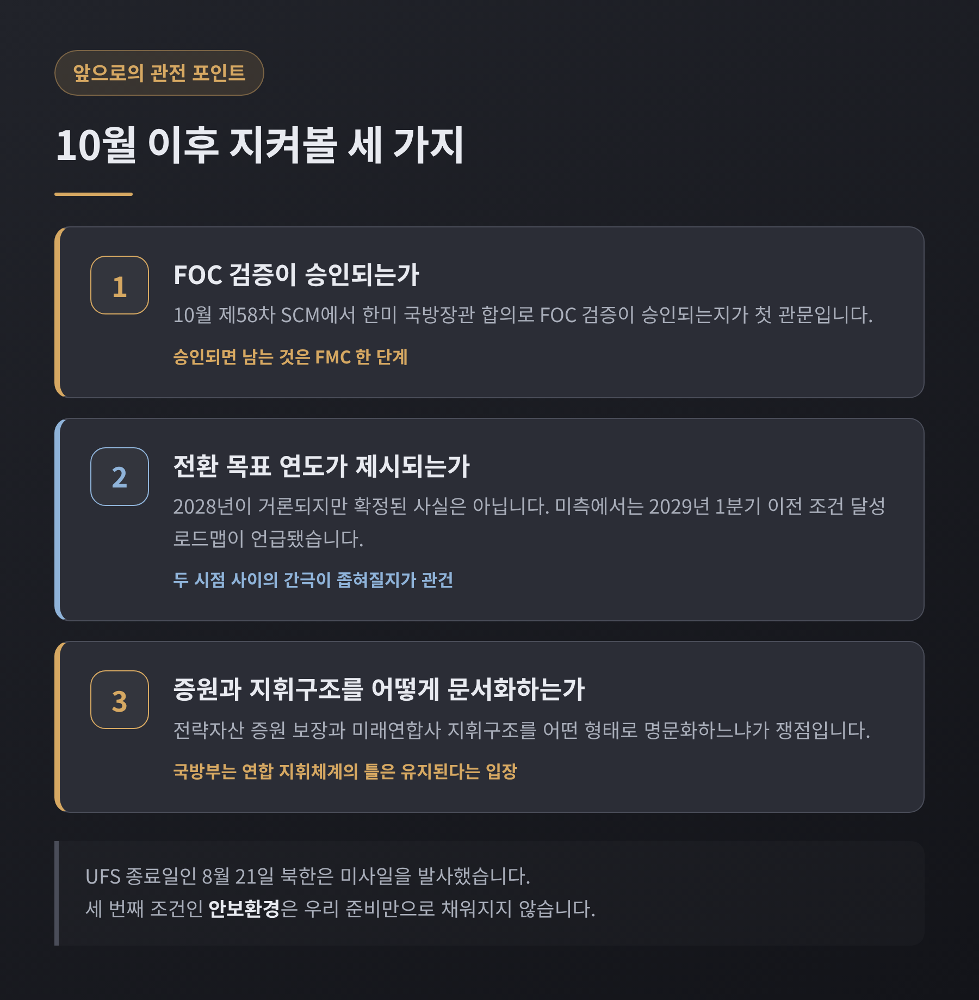

이번 글에서는 전시작전통제권 환수 문제를 정리해 보겠습니다. 2026년 8월 을지 자유의 방패(UFS) 연습을 계기로 다시 논의가 커졌습니다. 무슨 일이 있었고, 어떤 절차가 남았으며, 찬반 양측이 각각 무엇을 말하는지 순서대로 짚어보겠습니다.
먼저 세 줄로 요약합니다.
이재명 대통령은 2026년 8월 18일 청와대에서 열린 제1회 을지국무회의 모두발언에서 전작권 문제를 언급했습니다. 임기 내 환수를 정부 계획에 따라 차질 없이 추진하겠다는 취지였습니다.
같은 자리에서 나온 표현이 하나 더 있습니다. "견고한 한미동맹과 자주적인 국방 역량 강화는 서로 필요충분조건"이라는 말입니다. 동맹과 자주국방이 대립하지 않는다는 설명입니다. 핵추진잠수함 사업의 속도와 국군사관학교 창설 준비도 함께 주문했습니다.
시점이 미묘했습니다. 이틀 전인 8월 16일(현지시간) 트럼프 미국 대통령이 한미연합연습 규모를 대폭 축소하라고 피트 헤그세스 국방장관에게 지시한 상태였습니다.

올해 UFS는 8월 17일부터 27일까지 11일간 실시될 예정이었습니다. 그러나 8월 21일에 조기 종료됐습니다. 기간이 11일에서 5일로 줄었습니다.
전면전을 가정한 1부 방어 훈련까지만 진행됐고, 2부 반격 훈련은 취소됐습니다. 이미 진행 중이던 전구급 한미 연합훈련의 기간과 규모가 미국 대통령의 지시로 축소된 것은 이번이 처음입니다.
야외기동훈련(FTX)도 줄었습니다. 올해는 계획 단계부터 14건이었습니다. 지난해에는 44건을 계획했으나 실제로는 22건만 시행됐습니다.
그럼에도 국방부는 평가가 정상적으로 이뤄졌다고 밝혔습니다. 국방부 관계자는 8월 19일 "한미는 지난해 SCM 합의에 따라 올해 FOC 검증을 완료하기 위해 긴밀히 협력했다"며 "이번 UFS 기간에 계획된 한미 공동평가는 정상 시행했다"고 설명했습니다. 공동평가는 연습 이틀째인 8월 18일을 기준으로 마무리된 것으로 전해졌습니다.
다만 한계도 함께 기록해 둘 필요가 있습니다. 한국군 4성 장군이 미래연합사 사령관 역할을 수행하는 연습은 이번 UFS에서 진행되지 않았습니다.

2015년 10월 한미 국방장관은 전환 방식을 바꿨습니다. 예전엔 시기를 정해놓고 넘기는 방식이었습니다. 지금은 조건을 채워야 넘기는 '조건에 기초한 전작권 전환계획(COTP)'입니다.
조건은 세 가지입니다. 연합방위를 주도할 한국군의 핵심 군사능력, 동맹의 포괄적인 북핵·미사일 위협 대응 능력, 그리고 안정적 전환에 부합하는 한반도·역내 안보환경입니다.
검증은 3단계로 나뉩니다. 최초작전운용능력(IOC), 완전운용능력(FOC), 완전임무수행능력(FMC) 순서입니다. FOC는 정량적·군사적 평가 비중이 높아 가장 까다로운 관문으로 꼽힙니다. 마지막 FMC는 정성적 평가와 정치적 결단이 함께 작용하는 단계입니다.
각 단계의 결과는 SCM에서 공유됩니다. 이후 한미 국방장관이 양국 대통령에게 최종 전환 연도를 건의하는 구조입니다.

남은 절차의 핵심은 10월입니다. 미국 워싱턴 D.C.에서 제58차 한미안보협의회의(SCM)가 열립니다.
정부 구상은 이렇습니다. UFS에서 FOC 평가를 사실상 마무리하고, 그 결과를 SCM에 보고한 뒤, 전환 목표 연도를 결정해 양국 통수권자에게 건의한다는 것입니다.
안규백 국방부 장관은 8월 5일 청와대 업무보고에서 "후반기에 전환 로드맵을 완성하고, 제58차 SCM에서 FOC 검증이 끝나면 전작권 회복 시기를 건의하겠다"고 밝혔습니다.
목표 연도로는 2028년이 거론됩니다. 다만 이는 군 고위 관계자를 인용한 관측이지 확정된 사실이 아닙니다. 미측에서는 다른 시점이 언급됐습니다. 제이비어 브런슨 주한미군사령관은 지난 4월 미 하원 군사위원회 청문회에서 2029회계연도 2분기, 한국 기준 2029년 1분기 이전까지 조건을 달성하기 위한 로드맵을 제출했다고 밝혔습니다.
첫째는 주권 논리입니다. 자국 군대의 전시 작전통제권을 자국이 행사하는 것이 정상적이라는 주장입니다. 대통령이 "우리 자신의 힘을 키워야 동맹으로서의 가치와 필요성도 더 커진다"고 말한 것도 같은 맥락입니다.
둘째는 능력 충족론입니다. 한국 측은 2020년 한미 합의 기준으로 전환 조건의 94%가 이미 충족됐다는 평가를 제시한 바 있습니다.
셋째는 동맹 재조정 흐름과의 정합성입니다. 미국이 동맹국의 책임 분담 확대를 요구하는 상황에서, 한국의 역할 확대가 동맹 관리에도 도움이 된다는 시각입니다. 헤그세스 국방장관은 한국의 방위비 증액을 두고 "책임 분담이 어떤 모습인지 보고 싶다면 대한민국을 보라"고 평가하기도 했습니다.
여기에 실제 준비도 병행되고 있습니다. 국방부는 8월 5일 업무보고에서 13가지 후반기 과제를 제시했습니다. 연내 연합특수작전구성군사령부 상설화, 내년까지 6개 연합구성군사령부 체제 구축이 포함됐습니다. 핵추진잠수함은 2026년 5월 기본계획이 나왔고, 2030년대 중반 1번함 진수를 목표로 합니다. 국방비는 GDP 대비 2.32% 수준에서 2035년 3.5%로 올리는 경로가 제시돼 있습니다.

첫째는 정치 일정 종속 우려입니다. 국방 정책의 속도가 정권 임기에 맞춰지는 것 아니냐는 문제 제기가 있습니다.
둘째는 검증의 실전성입니다. FTX가 14건으로 줄고 2부 반격 훈련이 취소된 상태에서 이뤄진 평가를 두고, 충분한 검증이었는지 묻는 지적이 나옵니다.
셋째는 증원전력 문제입니다. 지금은 미군 4성 장군인 한미연합사령관이 미 인도·태평양사령부의 전략자산을 시차별로 자동 증원하는 구조를 관장합니다. 항공모함, B-52H 폭격기, 미사일방어 자산 등입니다. 한국군 대장이 지휘하는 미래연합사 체제에서도 이 구조가 지연 없이 작동할지가 쟁점입니다. 미군이 자국 군대를 외국군 장성의 작전 지휘 아래 두지 않는다는 이른바 '퍼싱 원칙'도 함께 거론됩니다.
넷째는 미국 국내 절차입니다. 미 의회는 국방수권법안을 통해 전작권 전환 계획 이행과 한국군 능력, 북한 위협 평가에 관한 보고서 제출을 요구하고 있습니다. 전환 완료 자체가 의회 인증 대상으로 규정돼 있습니다. 한미가 합의해도 절차가 거기서 끝나지 않는다는 뜻입니다.
브런슨 사령관의 "정치적 편의주의가 조건을 앞질러서는 안 된다"는 발언도 이 흐름에 놓입니다.
세 가지를 보시면 됩니다.
첫째, 10월 SCM에서 FOC 검증이 국방장관 합의로 승인되는지입니다. 승인되면 남는 것은 FMC 한 단계뿐입니다.
둘째, 전환 목표 연도가 실제로 제시되는지, 제시된다면 몇 년인지입니다. 2028년과 2029년 사이의 간극이 좁혀질지가 관건입니다.
셋째, 증원전력 보장과 미래연합사 지휘구조를 문서로 어떻게 못 박느냐입니다. 국방부는 전작권이 회복되더라도 연합 지휘체계의 본질적 틀은 유지된다는 입장입니다.
한 가지 더 있습니다. UFS 종료일인 8월 21일 북한은 미사일을 발사했습니다. 안보환경이라는 세 번째 조건은 우리 준비만으로 채워지지 않습니다.

정리하면 이렇습니다.
2026년 UFS는 전작권 전환의 두 번째 관문을 통과하는 무대였고, 평가는 진행됐지만 승인은 아직 남아 있습니다. 10월 SCM이 다음 장면입니다.
이 사안은 한쪽 손을 들어주기 어려운 문제입니다. 자주국방의 정당성도, 검증의 엄밀함을 요구하는 목소리도 각각의 근거를 갖고 있습니다.
그래서 지금 필요한 것은 결론이 아니라 기록일지 모릅니다. 조건이 어떻게 채워졌는지, 무엇이 아직 비어 있는지를 그때그때 확인해 두는 일 말입니다. 10월에 다시 이 이야기를 이어가겠습니다.